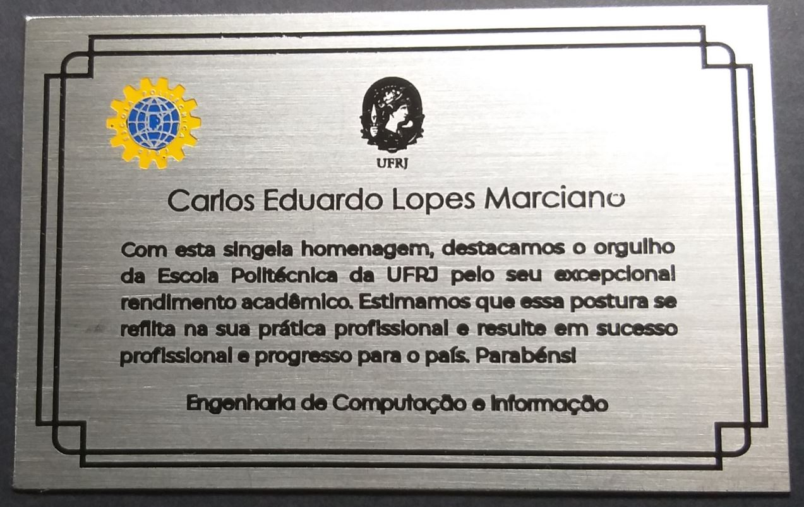

Carlos Eduardo Marciano
Engenheiro de Computação e Informação
Universidade Federal do Rio de Janeiro — UFRJ — Brasil
Bacharel — Aug 2014 to May 2019 — CR acumulado: 8,8
Meu Github CV em PDF
Research Experiences
Inria - Sophia Antipolis
Biot, France (Sep 2019 — Dec 2019)
Orientador: Dr. Giovanni Neglia
Financiado por Inria
[[Intern]] Além de ter a oportunidade de oferecer monitorias presenciais e à distância, venho contribuindo com as avaliações da disciplina e disponibilizando orientações de como realizar os trabalhos práticos necessários.
Universidade Federal do Rio de Janeiro
Rio, Brazil (Dez 2017 — Mar 2019)
Orientador: Dr. Felipe M. G. França
Financiado por Bolsa CNPq
[[Undergraduate Researcher]] Realizei dois projetos teóricos distintos envolvendo teoria da complexidade, sistemas distribuídos, concorrência em grafos e otimização combinatória, resultando em um artigo científico ao final de 2018.
Publications
- MARCIANO, C. E., LUCENA, A., FRANÇA, F. M. G., SIMONETTI, L. G., Minimum Concurrency for Assembling Computer Music, Proceedings of the 9th International Network Optimization Conference, Avignon, France, June 2019. Ver PDF Ver Slides
- Undergraduate project. MARCIANO, C. E., Obtendo Concorrência Mínima através de Ciclos Máximos sob a dinâmica de Escalonamento por Reversão de Arestas, Federal University of Rio de Janeiro, Brazil, March 2019. Ver PDF Ver Slides
- MARCIANO, C. E., Social Compassion — A #PrayForSyria Visualization, Federal University of Rio de Janeiro, Brazil, December 2018. Ver PDF
Peer-reviewed
Best Student Paper Award INOC 2019
Thesis
Tech Reports
Teaching Assistantships
Linguagens
Naturais
- Portugês (fluente)
- Inglês (fluente)
- Francês (fluente)
- Espanhol (básico)
De Programação
- C e C++ (fluente)
- HTML, CSS, JavaScript, jQuery (fluente)
- Python (fluente)
- React, Angular, Ionic (intermediário)
- TensorFlow, MongoDB (intermediário)
Conquistas

1º Lugar Engenharia de Computação UFRJ
Classificado em 1º lugar no vestibular do curso com um total de 4035,60 pontos pelo ENEM 2014.

Nota 1000 na Redação do ENEM 2014
Escritor de uma das 250 redações, de um total de 6 milhões, que receberam nota 1000 no ENEM 2014.

Maior CRA Engenharia de Computação UFRJ
Graduado com o maior Coeficiente de Rendimento Acumulado entre meus colegas de Engenharia de Computação na primavera de 2019.
Cursos Relevantes
Cursos Principais
- Algoritmos e Estruturas de Dados
- Arquitetura de Computadores
- Otimização
- Inteligência Computacional
- Teoria da Computação
Outros Cursos
- Otimização em Grafos
- Probabilidade e Estatística
- Cálculo & Álgebra Linear
- Machine Learning (Coursera)
- Inglês & Francês
Alguns Projetos

Issues Monitoring
Sistema construído em equipe com técnicas de Eng. de Software para monitorar laboratórios da UFRJ. Envolve Arduinos, interface web, um servidor central e um parser para integração com outro sistema.

Social Compassion
Uma visualização interativa com dados de 222.180 tweets mostrando as reações dos usuários à guerra na Síria. Este projeto pessoal foi inspirado em uma exposição artística sobre visualização de dados.